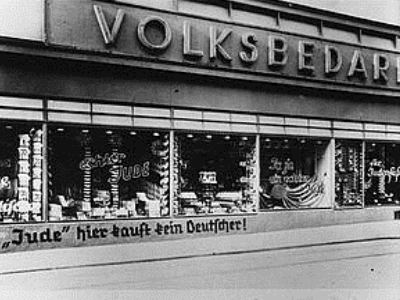

Prejudice with Condiments: understanding Schwabenhass
As an immigrant of a certain type, one often converses with, discusses, and reads about other so-called ex-patriots. It’s easy to feel like the world revolves around you, which must be why it’s easy to assume that we – the largely English-speaking, often temporary immigrants – are at the heart of the gentrification debate in Berlin. There’s no shortage of talk about how we don’t (or won’t) learn German, how we move into traditionally poorer neighborhoods and contribute to rising rent costs, and how we waltz into the corner cafe demanding a fancy latte rather than a good ol’ Milchkaffee.
But what I had forgotten about were the rich and educated Germans – the Schwaben, for that matter, migrants from Southern Germany charged with gentrifying Berlin, essentially the root of the careless economic change sweeping the city. Schwaben have begun to represent a German crisis of identity, one acted out between markets and their effects on long-standing communities. Emblematic of this crisis is the ‘vandalism’ of the statues of one famous Schwaben splattered with Currywurst (the iconic dish of Berlin) and one famous Berlinerin splattered with Spätzle (the icon dish of Swabia), as pictured below.
{kind=link}
{kind=link}
The ketchup- or cheese-smeared faces of Swabian icons are just one small part of a culture war between imagined identities and exaggerated actors, i.e. the alternative Berliner vs. the fancy-schmancy Swabian. The worst part in this so-called Spätzlekrieg or ‘Spätzel war’ is the escalation from humorous prodding to line-crossing slogans. Parallels between Nazi persecution of the Jews, particularly in the insignia of Kristallnacht, can be found across the city. Berlin is a city rife with history; is its memory this short?
{kind=link}

Sprayed on storefronts around some of Berlin’s gentrifying neighborhoods are the words Kauf nicht bei Schwab’n, Don’t buy from Schwaben, a direct usage of the tags in the period of escalation before German deportation of its Jewish population, as pictured in this image above from Kristallnacht.
Schwabenhass, hatred of Schwaben, may be a problem of discrimination and unjust intimidation, but it is not necessarily as extreme as this graffiti demonstrates. Like the Neo-Nazi presence in Berlin, it is hopefully a minority of enraged individuals sending such messages, not ordinary Berliners participating so overtly in a culture war run on Nazi taglines. Yet, as Germany’s scandal of right-wing terror unfolds in court for the world to see, even a little bit of rage and misplaced language should be taken seriously and cautiously. Language and the explanations it provides for socioeconomic change can be as powerful as policy in determining public opinion. In the efforts of understanding and taming this condiment-covered beast of a crisis between Berlin and the incoming Schwaben, let us deconstruct a bit.
Hatred does not come out of the mist of Neverland, nor do Schwaben. So, who are Schwaben really, why are they now the object of aggressive criticism?
Schwaben stem from the imagined community of Swabia or technically from the state of Baden-Württemberg. Located in Southwestern Germany, this traditionally Schwäbisch-speaking group within Germany has historically stretched as far as Bavaria. Accuracy of geographic or linguistic boundaries aside, Schwaben in Berlin have come to represent an ideological and historical conflict – a crisis – within Germany, one that has become particularly salient and searing since the fall of the wall in 1989.
This period between 1989 and 1990 is what Germans refer to as die Wende, the big change, in which a reunited Germany faced the fusion of a strict socialist economic system with an Americanized capitalist machine, to put it simply and dramatically. Rapidly following the change of power, bananas became available in the East, pickles came in more than one kind of jar, and automobiles came in models that didn’t just start with the letter “T”. The effects of this shift to a market economy in the East, however, were not as rosy as this example of consumerism demonstrates. High rates of unemployment, closure of factories and schools, dissolution of livelihoods and promised pensions sent ripples through the former East. For the many of the residents subject to these unanticipated changes, longing for the old days – a phenomenon nicely called Ostalgie (nostalgia for the East) – became a prevalent response to the BRD‘s (Federal German Republic) sweeping policies. Contrasts were drawn and enemies were created, Feindbilder, as they say in German: a concept of the enemy.
Representative of much of this change and the trauma and tumult that resulted are the cities of Frankfurt and Stuttgart (one could even throw Munich in, for good measure). Both of these financial capitals in Germany, where men and women in Western business attire can be seen entering America-styled skyscrapers, embody many of these latent East vs. West differences. As a product of history, these cities and the residents that stem from them also embody the animosities and frustrations of geographic and ideological division. High-rise glass structures and the minions that occupy them have come to represent a struggle with history and an uncertain present, mow imported via its Swabian personnel to the streets of Berlin.
The tensions between market-induced change and struggling communities are particularly palpable in Berlin, as a reunited city familiar to hardships and class differences. It is currently the poorest capital relative to its country’s GDP within the EU, hence Klaus Wowereit’s tagline Berlin ist arm aber sexy, poor but sexy. Despite flashy art openings and fashion shows, there are plenty of residents on welfare, children struggling to acquire adequate nutrition, and financial debacles like a severely unfinished airport and inadequate educational institutions to paint quite an un-sexy picture.
Berlin isn’t Frankfurt or Stuttgart with its sparkling streets and mowed lawns, where Schwaben (often inaccurately grouped together) run the show. It is a city struggling to remake itself and accommodate both newcomers, the unwelcome immigrants (Gastarbeiter) of yore, and Urberliner (old time residents), all while keeping its precarious budget afloat. Problems abound in the process, including the false assignment of priorities, such as a focus on temporary media projects that provide snaz for short-term residents but do nothing to fix long-term structural problems. Newcomers with higher incomes and chicer haircuts also contribute to 1. rent increases in a city without a rent floor or ceiling and 2. price increases in everything from theater tickets to bread. Gentrification, the buzzword seeping through the city like the yellow fog through T.S. Eliot’s “The Love Song of J. Alfred Prufrock”, draws many rapid and unfair conclusions in response to these problems.
Enter the undesired Schwaben, the Swabian enemy. These Schwaben may in fact distort real estate value, but no one group can be charged with single-handedly transforming quaint alternative neighborhoods into Stuttgart-look-alikes, let alone Berlin into a money-making machine for the affluent. The problems of uncontrolled markets and post-GDR reconstruction will not fix themselves, nor will they be solved by aggressive prejudice or hatred toward a supposed enemy, created, after all, for the purpose of simply needing one. A little dialogue, historical perspective, and vigilance toward language and actors is in order. Maybe even a conversation with one of these Schwaben.
After all, Spätzle is eaten everywhere. Even in Berlin.
-By Kelly Miller
To get this conversation started, the Kulturbrauerei is hosting performances of Schwabenhatz – a play about the Spätzle war, its stereotypes, and its ridiculously strange foundation for conflict. The show runs until 25.06. And for the record, the first image of the Spätzle-flinging was meant to be a joke. The last few, however, are anything but.
Photos used were found in an article and accompanying photo gallery in the Tagesspiegel and in the United States Holocaust Memorial Museum’s public archives.
Hi there.
I gotta do the german Klugscheißer-thing here:
the first picture does not show a famous Schwabe, but Käthe Kollwitz,
a socialist Artist, born Prussian and iconic personality of post-WW I Berlin.
It was actually the “Kommando Free Schwabylon” who did the
Spätzleattack on her statue. No kidding!
Thanks for the comment, ‘Doomy’. The image was presented in the Tagesspiegel article (now cited at the end of the post) without much context; we should have recognized the statue as a well-known Berlinerin but Käthe in the flesh ist es nicht! This fact and its humorous roots definitely add a new dimension to the story. Of course, the second image is a bit more serious, demonstrated by the public explanation for action by the group “Schwaben Ausbürgern”, http://schwabenausbuergern.tumblr.com/. They are one extreme and not so funny side of the conflict but truly not all of it. Feel free to post any info about the “Kommando Free Schwabylon” if you have a second – needed addition for a complete picture – and thanks again for the info!
Eine spannende (und nicht in Deutschland durchgeführte) Theorie, entwickelte Norbert Elias. Diese Theorie beschreibt sehr gut, wie Rassismus entsteht, unabhängig von Nationalität oder “Schicht”. Dabei entwickelt er die Begriffe Etablierte und Außenseiter.
Zur Berlin Situation: die Berliner sind die ehemaligen Etablierten, die jetzt zu Außenseiter worden, doch sich selbst immer noch als Etablierte sehen und den Schwaben als Außenseiter. Um den Unmut über diese Situation zu zeigen, bedienen sie sich extremen Nazi-ähnlichen Mitteln. Leider!
Ihren Unmut kann ich verstehen, doch richten sie diesen auf die falschen Personen.
Die meiner Meinung nach ehrlichere Crux ist, dass die Gehälter zu niedrig sind, im Vergleich zum Mietspiegel (nicht jedoch für Akademiker).
Beispiel: in anderen Städten, die einen ähnlichen Mietspiegel haben, würde man ein/e Kellner/in nicht mit 7,5€/h abspeisen oder eine Frisörin mit 5,5€ oder weniger.
“Ihren Unmut kann ich verstehen, doch richten sie diesen auf die falschen Personen” – sehr gut gesagt und da sind wir uns komplett einig. Die Untersuchung oder Erklärung Diskriminierung bzw. Feindlichkeit einer bestimmten Gruppe gegenüber ist eine nötige aber anstrengende Aufgabe, die nicht so viele Fragen beantwortet lässt. Hauptsache ist: Vorwürfe werden hinterfragt und Generalisierungen vermieden. Danke für dein Kommentar!
Informative and well written commentary. I learned something. Thank you!
Bethesda, USA